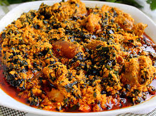

Peak Dish ngl
Egusi is a rich, nutty, and deeply savory soup thickened with ground melon seeds. It is "peak" Nigerian cuisine because of its complex layers of umami—a beautiful chaos of textures featuring leafy greens, assorted meats, and fermented locust beans.
Ingredients
- 1.5 cups Ground Egusi (Melon seeds)
- 2 cups Spinach or Ugu (Fluted pumpkin leaves), chopped
- Assorted Meats: Beef, Shaki (tripe), and Cow skin (Ponmo)
- Dry Fish & Stockfish (for that essential smoky depth)
- 1/2 cup Palm Oil
- 1/4 cup Ground Crayfish
- 2 tbsp Iru (Fermented locust beans)
- Blended Base: 2 red bell peppers, 2 scotch bonnets, and 1 onion
- Seasoning: 2 bouillon cubes and salt to taste
Prepeparation steps
Boil the Meats
Season your beef, shaki, and stockfish with onions and bouillon. Boil until tender, saving the rich stock for the soup.Make the Egusi Paste
Mix the ground egusi with a little water or onion juice to form a thick, lumpy paste.Fry the Base
Heat palm oil in a pot (don't bleach it). Sauté sliced onions and the blended pepper base for 10 minutes.Add Egusi
Drop small "balls" of the egusi paste into the oil. Do not stir immediately; let them fry and firm up for 5 minutes so you get those nice "lumps."Simmer
Add your cooked meats, stockfish, crayfish, and iru. Pour in 1-2 cups of meat stock. Cover and simmer for 15 minutes.The Greens
Stir in your chopped spinach or ugu. Let it wilt for 2-3 minutes, then turn off the heat. Serve with smooth Pounded Yam.
Homepage